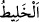

ederek kendi koyunlarına katmakla... anlamındadır.
et-Te’vîlâtü’n-Necmiyye’de der ki: Burada, “haksızlık etme”nin, insan nefsinin
karakteri olduğuna ve başkalarının hakkına saygılı biri görüldüğü zaman bunun bir
sebebe bağlı olduğuna dâir bir işâret vardır. Nitekim Yûsuf (a.s.) bile “ben nefsimi
tezkiye etmiyorum...” (Yûsuf 12/53) demiştir. Yâni, nefisler -peygamber nefsi bile
olsalar- haksızlık etme, saldırganlık ve benzeri kötü sıfatlara sâhip olarak
yaratılmışlardır.
Fakir (Bursevî) der ki: Bu, nefislerin asıl yaratılışları ve gerçek yapıları bakımından
sözkonusudur. Yoksa peygamber nefisleri dâimâ kötülük emreden (emmâre) nefisler
değil, itmi’nâna ermiş (mutmainne) nefislerdir. Çünkü bu zâtlarda mutmain nefislere
has davranışlardan başka bir şey zuhûr etmemiştir. Bu, onların seyr ü sülûklarının ilk
mertebesidir. Nitekim Şeyh (Necmeddîn-i Kübrâ Hazretleri) de “başkalarının hakkına
saygılı biri görüldüğü zaman”... diyerek buna temas etmiştir. Bu konuyu çok iyi kavra;
zira bu ayakların kaydığı bir meseledir. Konuyla ilgili geniş açıklama, Yûsuf suresinde
geçti.
Daha sonra Dâvûd, () kelimesini, kadından kinâye oluşuna değil de gerçek
mânâsına alarak dedi ki: “Doğrusu ortakçıların çoğu, birbirlerinin haklarına tecâvüz
ederler.” Yâni malını yekdiğerinin malına karıştıran () ortakların çoğu, birbirine
haksızlık; arkadaşlık ve ortaklık hukukuna riâyet etmeyerek saldırganlık eder. Diğer bir
ifâdeyle kendi hakkı olandan daha fazlasını talep ederler. (), () kelimesinin
çoğuludur; zarîf ve zurefâ gibi. () masdarı, ortak olmak anlamında olmakla birlikte
daha çok davar sürülerindeki ortaklıklarda kullanılır. Bu ortaklar arasında, “yalnız
îman edip de iyi işler yapanlar müstesnâ.” Bunlar saldırganlık ve düşmanlıktan uzak
dururlar. “Bunlar da ne kadar az! dedi.” Bu ifâde, () şeklinde olup ()
mübtedâ; () ise haberdir. Esas önemli olan bunların azlığını ifâde etmek olduğu için
önce () zikredilmiştir. Bu kelime, mef’ûl anlamındaki fe’îl veznine benzetilerek
müfred kılınmıştır. ( ), bu azlığı pekiştirmek için veya kapalı bırakmak ya da îman ve
), bu azlığı pekiştirmek için veya kapalı bırakmak ya da îman ve
amel-i sâlihle muttasıf bulunanların az oluşuna hayret etme anlamı vermek için
eklenmiştir.
“Dâvûd, kendisini denediğimizi tahmin etti” Buradaki “tahmin/zan”, aralarındaki
benzerlikten dolayı istidlâle dayalı bilgi için müsteâr olarak kullanılmıştır. Yâni, bir
zann-ı gâlip ilim seviyesine yaklaşınca, ilim için istiâre edilebilir. O zaman bu tahmîn,
yakîn anlamındadır, fakat bizzat görmeye dayalı yakîn anlamında değil. Böyle bir yakîn
için ancak “ilim” kelimesi kullanılabilir.
Mânâ şu şekildedir: Dâvûd, muhâkeme meclisinde cereyan eden bu konuşmalardan
bizim bunu sırf kendisini denemek ve imtihan etmek için yaptığımızı ve kendisinden
sâdır olan davranışın günah olduğunu anladı.
“Ve” tıpkı Âdem (a.s.)’ın: ‘Rabbimiz biz kendimize haksızlık ettik...’ ve Musa
(a.s.)’ın ‘Sana tevbe ettim’ şeklindeki tevbelerinde ve başka peygamberlerin yeri